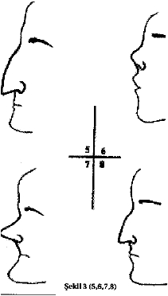
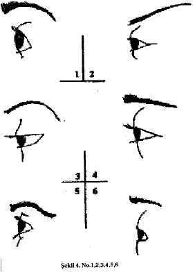

Ara ş t ı rma Serisi No.13
¯¯¯¯¯¯¯¯¯¯¯¯¯¯¯¯¯¯¯¯¯¯¯¯¯¯¯¯¯¯¯¯¯¯
23
Yüz Okuma Sanat ı
¯¯¯¯¯¯¯¯¯¯¯¯¯¯¯¯¯¯¯¯¯¯¯¯¯¯¯¯¯¯¯¯¯¯

Düz burun - sakin.
Öne do ğ ru a ş ı r ı ç ı km ı ş , ortas ı oyuk burun - enerjik.
Kemerli kartal burun - gönlü bol, cömert. Ensiz burun - dü ş üncesiz. Enli burun - uysal.
Kal ı n ve k ı rm ı z ı burun - yeme ğ e ve ş araba meyilli.
Kal ı n, k ı sa, etli ve balon ş ekilli burun - tutars ı z, zay ı f irade.
Geni ş delikli burun - çevik, ş ı psevdi.
Sa ğ a veya sola meyilli e ğ ri burun - kurnaz, cimri.
Küt ve yass ı burun - aptal ve ahlaks ı z.
Göz
No.1. Büyük, yuvarlak ve geni ş kapaklan olan ve hafiften kan damlam ı ş gibi gözüken göz. Göz elmas ı nda küçük kan damarlar ı gözükmektedir. Göz elmas ı ise hastal ı k ça ğ r ı ş t ı ran, bazen sar ı ms ı bir s ı v ı katmanla kapl ı d ı r. Bir tek kelimeyle ifade etmek gerekirse - "fal ta ş ı gibi aç ı lm ı ş ". K ı sa kirpikler, dik k ı llar ı olan yüksek ka ş lara sahip tipler çabuk sinirlenen ve h ı rç ı n olup, fakat insan ve çocuk sevgisinden, içten ne ş elilikten (ama esprili de ğ il) yoksun de ğ iller.
No.2. Ensiz ve uzun kapaklar ı olan, d ı ş kö ş esi ve ka ş lar ı ş akaklara do ğ ru kalkm ı ş göz. K ı sa, fakat s ı k kirpikler aras ı ndan keskin bir bak ı ş la bakan gözbebeklerine sahiptir. Göz kapaklar ı s ı k s ı k daral ı yor (miyoplu ğ u ça ğ r ı ş t ı r ı yor). Bu tip insanlar gözlemci, içine kapan ı k, gizemli, kurnaz,

dayan ı kl ı ve a ş ı r ı bencildirler.
ikiyüzlü, ak ı ll ı , cinsel konularda ihtirasl ı ,
__________________________________________________________________
© WWW.MAXIMUMBILGI.COM